North Peak B2a Integration
B2a corrects four defects of the protected B1.1 massif: coastal seams (D1), the Western Col / Vesttind hierarchy (D2), the hiking route (D3) and a dry hollow (D4). It does not redesign the mountain. B2a is derived from B1.1 and versioned separately (design B2a.1). It is compared with B1.1 in real Three.js captures from identical cameras under both clay presets.
B2a fixes the four B1.1 geographic defects in the geometry, without loosening any criterion. No seam cluster exceeds 0.25 ha (B1.1 had four). The Western Col is at 681.4 m and gives Vesttind 54.4 m of prominence (B1.1: 695.3 m and 40.5 m). The dry hollow drains through a natural outlet. Coast, water, High Tarn, corridors and every other route are byte-identical.
B1.1's character survives in every identity view. The summit is unchanged at 897.04 m and is still the island maximum. The three arms, the cirques, the asymmetric crown and the Birchwood and Central Valley silhouettes all read the same. Outside the two declared windows the skyline moves at most 0.51 px.
The primary hiking approach is comfortable on the terrain: 3.0 km to the Vestfjell shoulder viewpoint, no metre above 0.30, max 0.296, no cross-slope above 0.5.
The optional scramble is not acceptable yet. It runs 8 m above its own 0.50 limit, 69 % of it has cross-slope above 0.5, and it has no usable tread. It is longer and steeper than the B1.1 summit section, and it first drops 66 m below the viewpoint. The heightfield bench also produces visible artefacts: a sawtooth on the north arête skyline and thin hard chevrons at the hairpins. Both need dedicated trail geometry, not more heightfield editing.
1 · Acceptance gates
Each gate is reported separately. None is relaxed to pass, and a failed criterion stays failed even though every automated test passes.
| Gate | Criterion | Result | Status |
|---|---|---|---|
| Geographic | D1: no blend-band seam cluster > 0.25 ha (criterion unchanged) | 0 clusters; largest 0.09 ha (B1.1: 2.08, 1.71, 0.88, 0.79 ha) | pass |
| Geographic | D2: Vesttind prominence ≈ 55–56 m without changing North Peak | col 681.4 m at (−810, 2683), prominence 54.4 m; the col is 40 m west of the authored point | pass |
| Geographic | D4: no dry closed hollow, no new tarn, High Tarn preserved | outlet carved (188 m, max cut 7.25 m); 0 dry hollows, 0 new sinks | pass |
| Geographic | Preserved areas: coast, water, High Tarn + 150 m, corridors, other routes, outside the study area | all unchanged (0 cells, Δ 0 m) | pass |
| Geographic | Summit and hierarchy | 897.04 m, island maximum; apex within 0.1 m inside 25 m; west shoulder up to 2.3 m lower (D2) | pass |
| Geographic | Skyline regression vs B1.1 (1.0 px outside declared windows, summit 0.25 px) | max 0.51 px outside, summit 0.0 px; D1 window 16.4 px, D2 window 2.9 px | pass |
| Hiking | Primary approach: 10 m grade ≤ 0.30 | 0 m over; max 0.296, p95 0.277 | pass |
| Hiking | Primary approach: terrain cross-slope | 0 % over 0.5 (B1.1: 25.7 %) | pass |
| Hiking | Primary approach: modelled tread comfort | tread p95 0.34; about 50 % above 0.15; a 4 m grid cannot model a 1–2 m tread | partial |
| Hiking | Optional scramble: 10 m grade ≤ 0.50 (its declared limit) | 8 m over in 3 short sections; max 0.516 | fail |
| Hiking | Optional scramble: tread | 69 % cross-slope > 0.5; usable tread median 0 m | fail |
| Hiking | Genuine browser traversal (viewer walk rule) | every route, including both B2a routes, walks end to end | pass |
| Artistic | B1.1 identity preserved (Birchwood, Central Valley, obliques) | preserved | pass |
| Artistic | Seams, col and outlet read as natural landform | seam steps replaced by descending arm ends; col reads as a saddle; outlet is a smooth notch | pass |
| Artistic | Trail benches read as a path, not as artefacts | sawtooth on the north arête skyline (scramble); thin hard chevrons and scratches at hairpins | fail |
| Engineering | Determinism, recomposition, tests, build, protected-file integrity, collision consistency | 2 runs identical; recomposition identical; 66/66; build passes; protected files identical; rendered = canonical | pass |
2 · Compare real renders
Real Three.js captures. Aerial cameras are fixed in the world, so B1.1 and B2a frames are pixel-registered. Walk cameras stand 1.75 m above whichever terrain is loaded, so a B2a route camera shows the B1.1 terrain at the same place, not on a B1.1 route. Clay material only: no vegetation, texture or trail ribbon.
Matched sheets (B1.1 | B2a, with an enlarged crop)
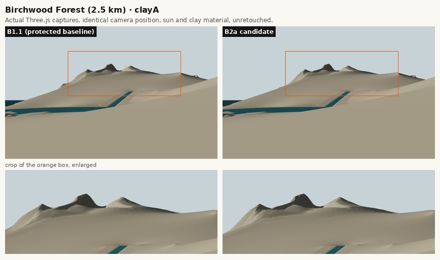
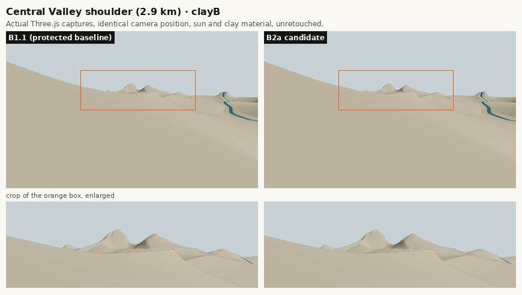
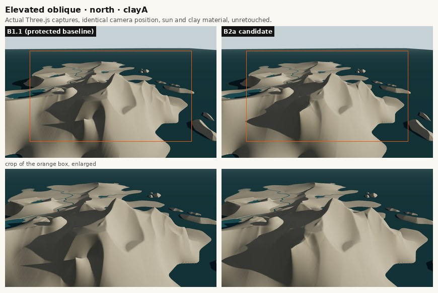
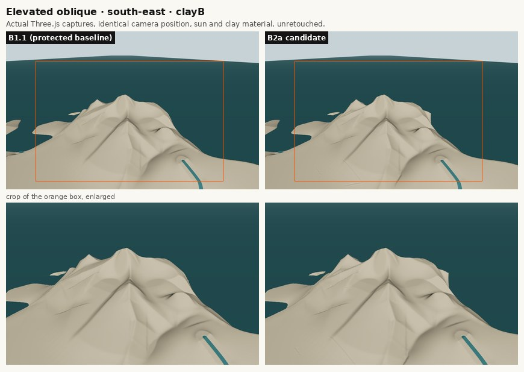
3 · D1 · Coastal and corridor seams
Same criterion as B1.1, same 0.25 ha limit: blend-band cells where the candidate is steeper than R1 + 0.5 and steeper than the core p99. B1.1 had four clusters over the limit. B2a has 0. The largest remaining cluster is 0.09 ha at [-1486, 2666], and the total added-steep band area is 0.16 ha.
The fix is in the geometry: Authored terminal profiles (D1): the authored difference to R1 decays to zero by smoothstep between the 70 m coast freeze and a per-structure terminal length (default 380 m, arm-west 380 m, b-vesttind-north 480 m, arm-north 450 m, C-N 520 m, C-NW 440 m; blended between structures by inverse-square distance), with S1 and S3 protected from the taper; a separate 320 m terminal taper before the windward-gully corridor. Same seam criterion, same 0.25 ha limit. The windward-gully seam is handled by its own corridor taper; the coastline and the frozen 0–70 m coast band are byte-identical to R1.
Band-independent cross-check, so the fix cannot simply have moved steepness out of the measured band: the area within 220 m of each B1.1 seam where slope exceeds R1 by more than 0.5, anywhere.
| Seam | B1.1 location | B1.1 cluster | Added-slope area, B1.1 → B2a | Max added slope |
|---|---|---|---|---|
| 1 | -1460, 2687 | 2.08 ha | 4.98 → 2.07 ha | 2.85 → 1.11 |
| 2 | -997, 2953 | 1.71 ha | 3.41 → 1.43 ha | 1.67 → 1.13 |
| 3 | -1117, 2093 | 0.88 ha | 2.46 → 0.15 ha | 1.19 → 0.56 |
| 4 | -73, 3180 | 0.79 ha | 2.37 → 0.81 ha | 3.47 → 1.54 |
Most of the remaining added-slope area around seams 1 and 2 is the authored arm flank above the band, not a step at the coast. It is reduced, not eliminated.
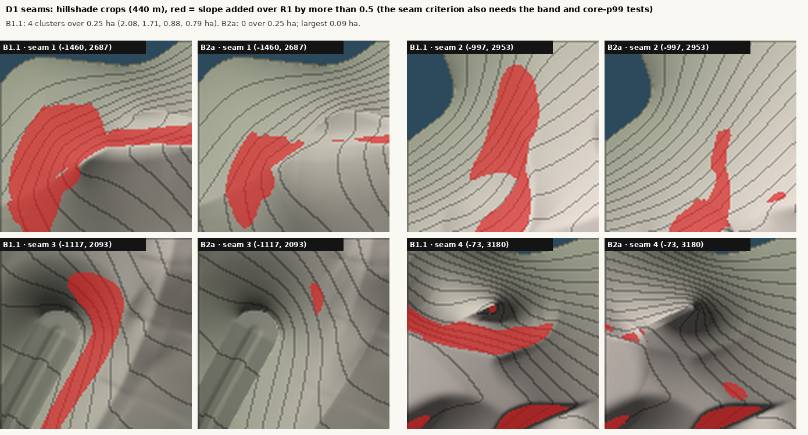
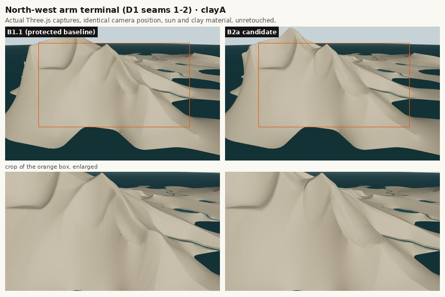
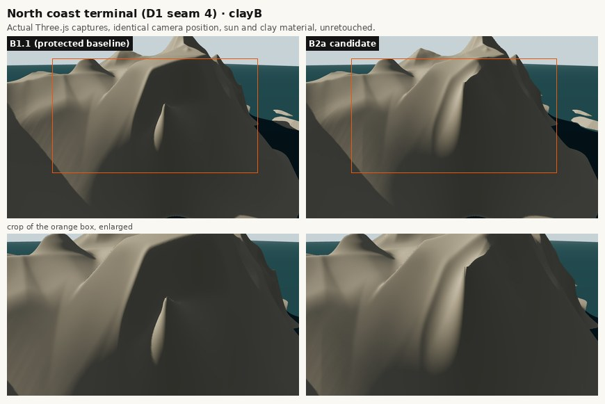
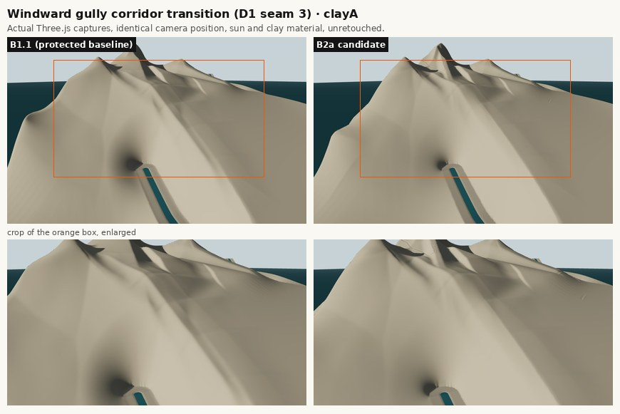
4 · D2 · Western Col and Vesttind
Cause in B1.1. At the authored col point the highest authored part is not the west arm (666 m, as designed) but the south-east arm (726 m): that arm starts at the summit, and because the flank-variation branch of ridge_height applied no end caps, the arm continued past its start as a radial cone that still stands 726 m high 250 m west of S0. The smooth-max union keeps it, so the col point is filled to about 729 m. The real low point of the S0-S1 crest moves 100 m west to the arm-west/plateau junction, where the Vestfjell plateau shoulder holds it at 695 m. Vesttind keeps 40 m of prominence instead of the authored 56 m.
Reconciliation. The B1.1 design asked for a 668 m col and about 56 m of Vesttind prominence. With Vesttind achieved at 735.8 m, 56 m means a col near 680 m, so the col target was raised to 680 m rather than lowering Vesttind or touching North Peak. South-east arm start cap (30 m, then a 1.6 fall) ends the arm behind the summit; col knot 676 m (target col about 680 m, reconciling the 56 m prominence intent with the achieved Vesttind); Vestfjell plateau start moved to (-935, 2580). Vesttind is not changed; the North Peak apex is unchanged (within 0.1 m inside 25 m), but its west shoulder 25-100 m from the apex is up to 2.3 m lower where the B1.1 spill-over cone is removed.
| Measure | B1.1 | B2a |
|---|---|---|
| Real low point of the S0–S1 crest | 695.3 m at [-873, 2673] | 681.4 m at [-810, 2683] |
| Height at the authored col point (−770, 2690) | 728.8 m | 692.5 m |
| Vesttind | 735.8 m | 735.8 m |
| Vesttind prominence above the col | 40.5 m | 54.4 m (target ≈ 55–56 m) |
| North Peak summit | 897.04 m | 897.04 m, island maximum: True |
| Drainage on either side of the col (30 m) | north: code 2, south: code 2 (1 High Tarn, 2 sea, 3 other) | |
The real col is 40 m west of the authored point, where the Vestfjell plateau shoulder still holds the crest. The authored point itself stands 692.5 m high. The prominence target is met; the col's position is not exact.
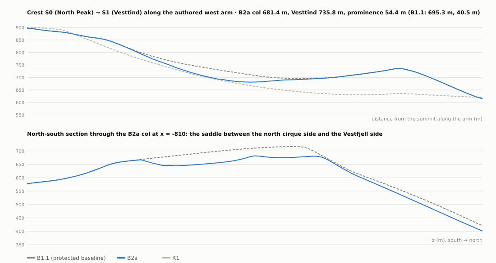
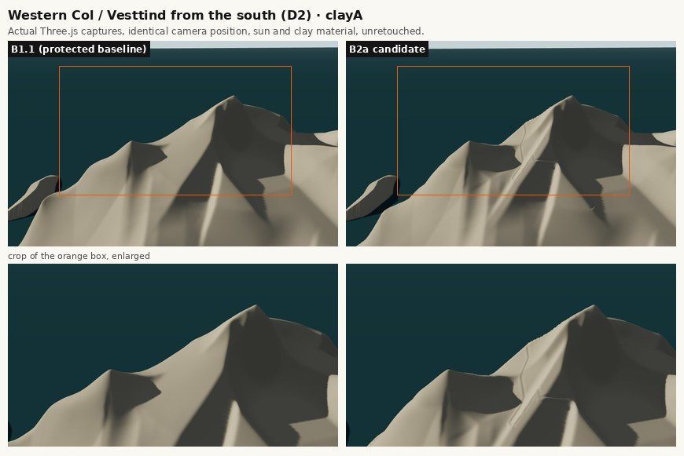
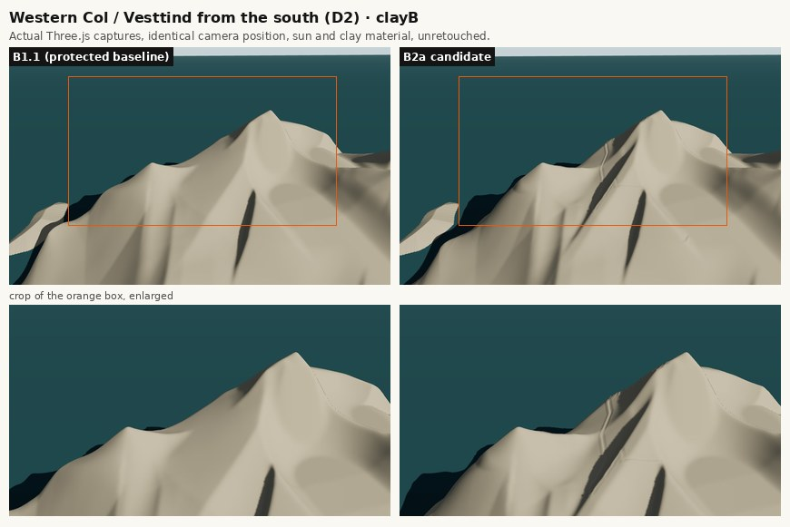
Skyline regression against B1.1
Measured skylines (terrain ray cast, eye 1.75 m). Two windows may change, and each is declared with its reason: the D2 col and the D1 west-arm terminal beyond Vesttind's protected core. Everywhere else the tolerance is 1.0 px, and the summit tolerance is 0.25 px.
| View | Max shift outside windows | Summit | D2 window | D1 window | Status |
|---|---|---|---|---|---|
| birchwood | 0.51 px | 0.0 px | 2.89 px | 16.41 px | pass |
| valley shoulder | 0.23 px | 0.0 px | 2.09 px | 0.0 px | pass |
| tarn overlook | 0.0 px | 0.0 px | 0.0 px | 0.0 px | pass |
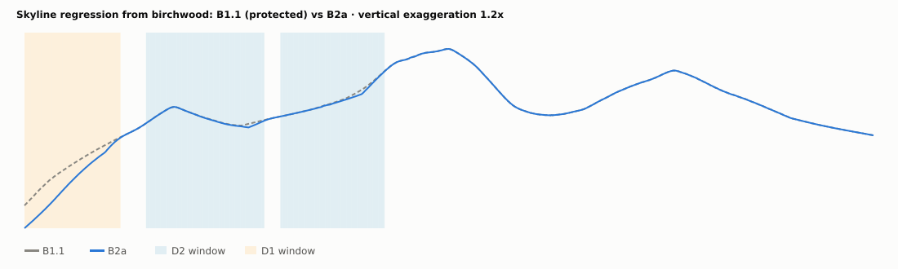
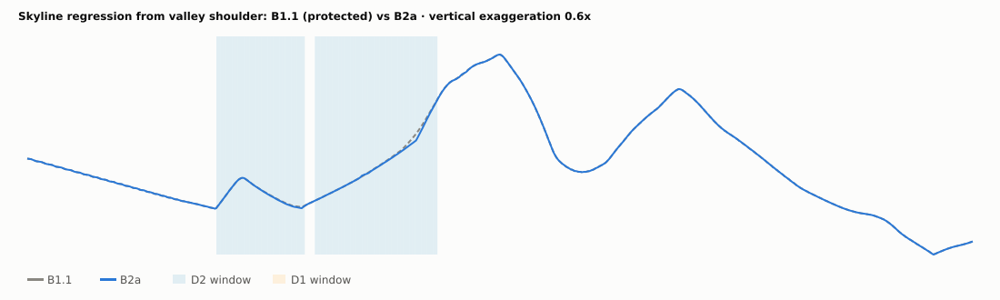
5 · D3 · Hiking route
Split into two routes with their own limits, both re-planned on the final rendered surface. The primary approach (peak-ascent, limit 0.30) follows the R1 alignment to the edited terrain. It then climbs to the highest node reachable within 200 m of the declared Vestfjell shoulder viewpoint. The optional scramble (peak-scramble, limit 0.50) is a separate, explicitly identified route from the viewpoint to the summit. Grades are measured over 10 m on the rendered SW-diagonal triangle surface.
| Measure | B1.1 route (to summit) | B2a primary approach | B2a optional scramble |
|---|---|---|---|
| Length / climb | 2795.3 m / 681.8 m | 3017.5 m / 493.6 m | 1222.6 m / 188.4 m |
| End | summit | viewpoint 708.6 m, 302.7 m from the summit | summit 897.0 m |
| Hiking grade (10 m) max / p95 | 0.428 / 0.294 (summit section max 0.475) | 0.296 / 0.277 | 0.516 / 0.471 |
| Above the route's own limit | 38 m over 0.30 outside the scramble | 0 m over 0.30 | 8 m over 0.50 (in 3 sections) |
| Terrain cross-slope ±2 m over 0.5 (new section) | 25.7 % | 0.0 % | 68.7 % |
| Modelled tread cross-slope ±0.75 m: p95 / share over 0.15 | not modelled | 0.342 / 50 % | 1.082 / 89 % |
| Usable tread (cross-slope ≤ 0.5 both sides): share under 2 m | 24.9 % | 1.3 % | 73.4 % |
Primary grade histogram: 0.00-0.10: 611 m · 0.10-0.20: 1233 m · 0.20-0.25: 630 m · 0.25-0.30: 534 m. Scramble: 0.00-0.10: 126 m · 0.10-0.20: 251 m · 0.20-0.25: 152 m · 0.25-0.30: 131 m · 0.30-0.35: 121 m · 0.35-0.40: 156 m · 0.40-0.50: 268 m · 0.50-0.60: 8 m.
Tread versus terrain. Terrain-level cross-slope at +-2 m and +-4 m is the B1.1 metric (unchanged). +-0.75 m and +-1.5 m measure the tread modelled by the B2a bench on the rendered surface. The 4 m heightfield represents the bench with grid nodes, so a 1-2 m tread is only approximated: at switchback interiors the bench is deliberately left out, and there the tread is the original terrain. The bench is cut and filled in the rendered heightfield along 1593 m, at most 3.38 m cut and 3.64 m fill. 81 nodes at switchback interiors are deliberately left as terrain. A 4 m grid cannot represent a 1–2 m tread, so tread comfort is reported as measured, not claimed: the primary tread stays below 0.5 cross-slope everywhere, but about half of it is above a comfortable 0.15.
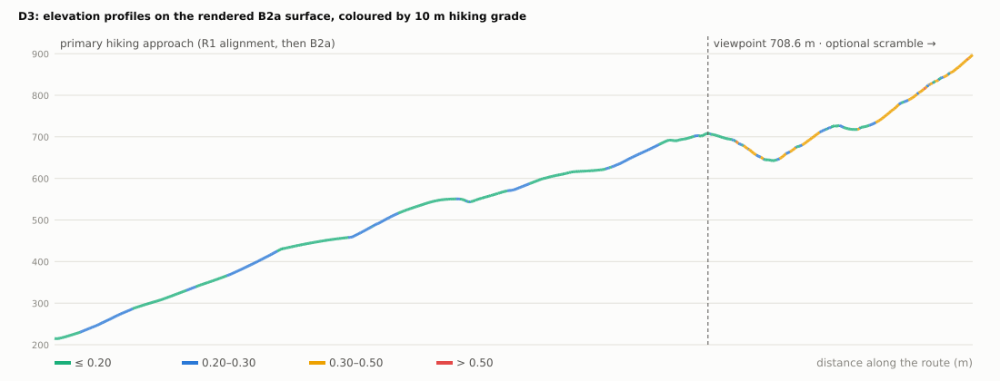
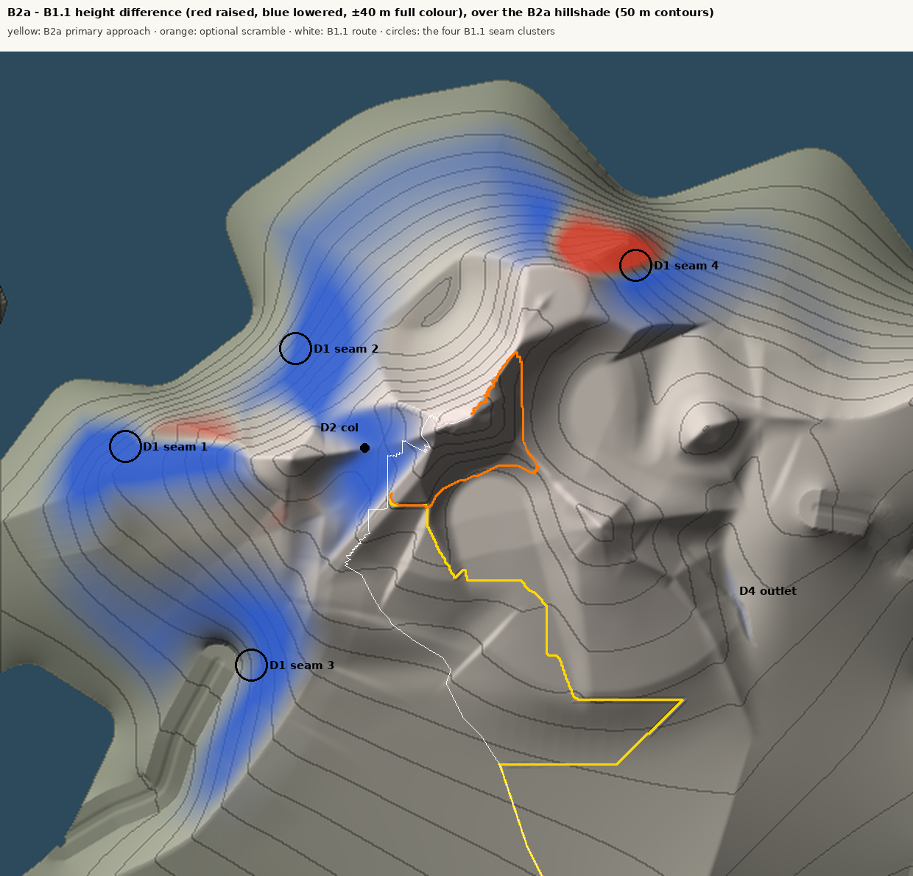
Genuine browser traversal on ?terrain=b2a-a
The viewer's own walkRouteForTest (0.65 m sub-steps, a step is refused above grade 0.7) in the running Three.js viewer.
| Route | Blocked at | End distance | Points |
|---|---|---|---|
| hero | none | 0.00 m | 5019 |
| tarn-ascent | none | 0.00 m | 1251 |
| peak-ascent | none | 0.00 m | 3056 |
| peak-scramble | none | 0.00 m | 1236 |
| peak-ascent-r1 | 2000 | 372.65 m | 2999 |
| hidden-loop | none | 0.00 m | 4019 |
| west-cape-spur | none | 0.00 m | 1754 |
| south-shoulder-loop | none | 0.00 m | 3464 |
Collision consistency (rendered vs canonical surface along each B2a route): peak-ascent 0.000 m, water above terrain -214.4 m; peak-scramble 0.000 m, water above terrain -642.5 m.
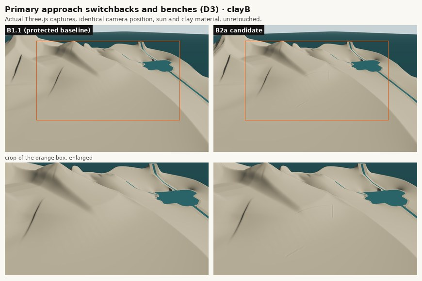
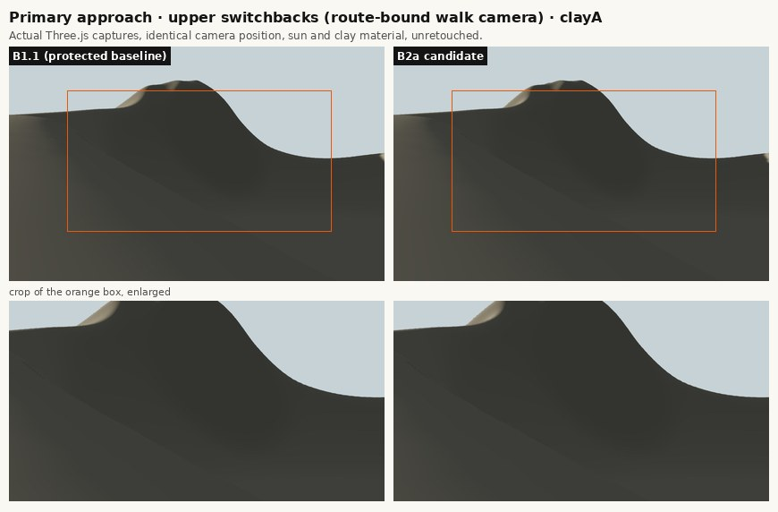
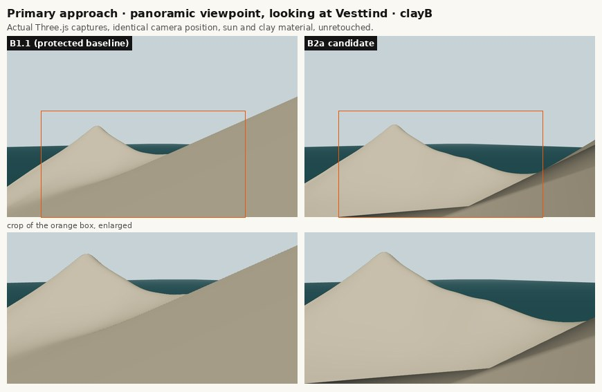
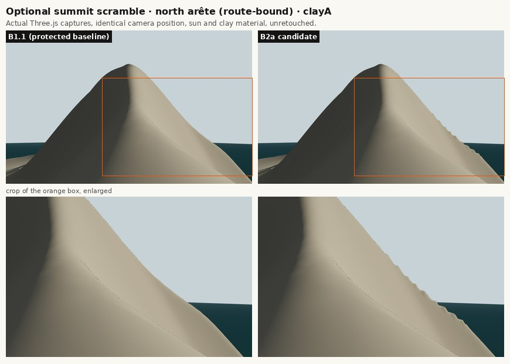
6 · D4 · Dry hollow outlet
B1.1 left a 0.39 ha closed hollow at (187, 2311), which priority flooding had filled by 6.6 m. B2a gives it a natural outlet instead of a new tarn. A least-cut breach path runs 188.2 m from the hollow floor (518.19 m) to freely draining ground at [254, 2146]. It is carved as a small gully with a 0.77 % bed, cutting at most 7.25 m over 229 cells. Remaining dry hollows: 0. New dry sinks on the whole island: 0.
The outlet path is smoothed in plan before carving. The first carve followed the 8-connected grid staircase, and with a bed narrower than a cell it aliased into a comb of notches. That was an implementation defect; it was fixed without changing any design parameter.
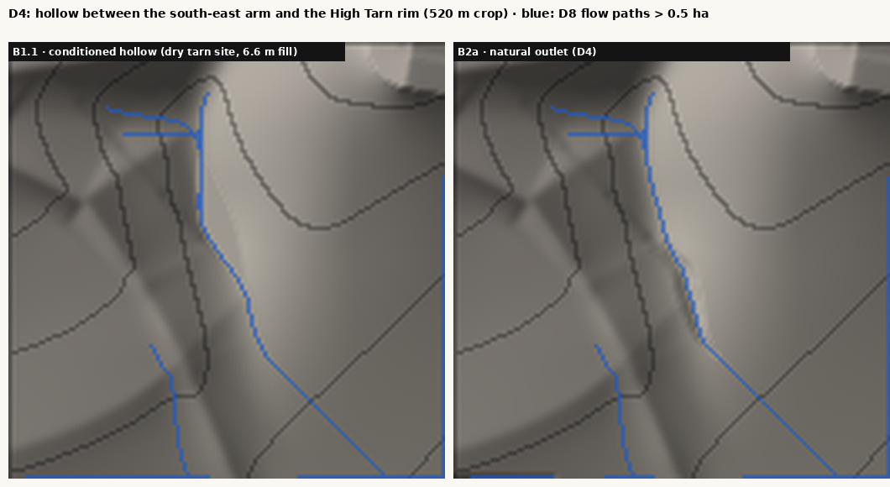
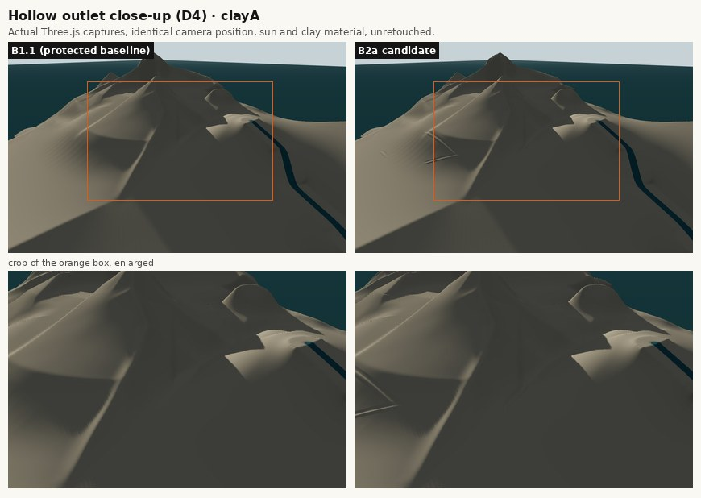
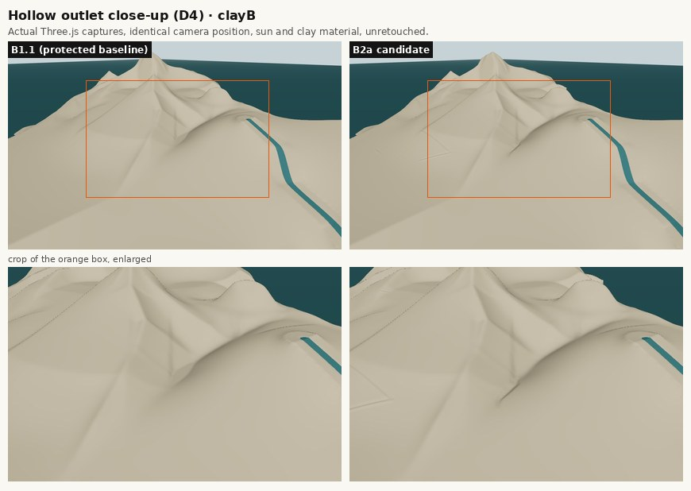
Drainage
17.56 ha change their drainage destination relative to R1 (B1.1: 17.55 ha). High Tarn's catchment is 102.3 → 95.3 ha (B1.1: 95.3 ha). Unresolved cells: 1921, all present on R1 too. unchanged: the water-surface raster is shared with R1 and no terrain under any water cell changed, so every lake level (High Tarn 360 m) and channel bed/water level is as in R1.
7 · Artistic evaluation
Judged on the real captures under both sun presets.
| Is B1.1's character intact? | Yes. In Birchwood and the Central Valley the B1.1 and B2a frames are hard to tell apart. The crown, the dominant summit and the three-arm massing are unchanged. The west-arm end is slightly lower and softer, the declared D1 change. |
|---|---|
| Do the coastal ends look natural now? | Clearly better. The north-west arm and the Vesttind buttress now run down to the sea instead of ending in a stepped sea cliff. The isolated lit fin at the north headland is gone, and the hard crease band beside the windward gully is replaced by a continuous flank. |
| Does the Western Col read as a col? | Yes. From the south and from the viewpoint, Vesttind now stands as its own top over a real saddle, instead of merging into the North Peak shoulder. |
| Does the outlet look believable? | Yes, as a small descending notch. The first carve had a comb of notches, which was fixed. In an aerial view the outlet is barely noticeable, which is right for its size. |
| How do the route and benches read? | The primary benches are mostly subtle. At hairpins and on traverses they show as thin, hard, perfectly straight scratches, which reads engineered. On the scramble the bench breaks the north arête into a sawtooth that is visible on the skyline from the route. That is a defect. |
| Overall | A better landform than B1.1 with the same identity. The remaining problems are trail geometry, not terrain. They belong in a dedicated trail mesh (ribbon plus collision), not in further heightfield edits. |
8 · Engineering, validation and reproducibility
| Check | Result |
|---|---|
| Nothing changes outside the study area; coastline and the 0–70 m coast band unchanged | pass |
| Every water cell, High Tarn (360 m) and 150 m around it, and both protected corridors unchanged | pass |
| All other route centrelines unchanged (Δ 0 m) and walkable | pass |
| Recomposition in memory equals the committed terrain | pass |
| Deterministic generation (2 runs, identical SHA-256) | pass |
| npm test: 66/66 pass (58 existing tests unmodified + 8 new in tests/geo-r02c-b2a.test.ts) | pass |
| npm run build: passes (chunk-size warning only, pre-existing) | pass |
| Protected files byte-identical to the B1.1 checkpoint (R1, A-R1 master, B1.1 design, patch, routes and evidence) | pass |
B2a changes 325.75 ha relative to R1 (B1.1: 327.19 ha). Full reports: validation/a.json, validation/a-final.json, validation/traversal.json, data/skyline-regression.json, data/seam-area-cross-check.json, run-log.json.
9 · Design master B1.1 → B2a
Every field that differs between the protected B1.1 design (tools/geo-r02c-b01/design/north-massif-b1.json, unchanged) and the B2a design. B2a.1 = the one bounded corrective pass: the first B2a build (B2a.0) passed the seam limit but lowered the west arm beyond Vesttind by about 80 m (21 px on the Birchwood skyline) because the 520 m arm-west terminal reached inland past the protected Vesttind radius. The arm-west terminal is shortened to 380 m.
| Field | B1.1 | B2a |
|---|---|---|
outlets | None | [{'id': 'O1', 'name': 'Tarn-rim hollow outlet', 'nearXZ': [187, 2311], 'widthM': 14, 'bedHalfWidthM': 2, 'sideSlope': 0.7, 'bedGrade': 0.04, 'dropM': 1.5, 'sear |
parentB11 | None | {'file': 'tools/geo-r02c-b01/design/north-massif-b1.json', 'sha256': 'b2a36745c527ff36577bd2fee5946d4490b805b39fcd34f7a46d888271126db4', 'terrainSha256': '86e89 |
revision | B1.1 | B2a.1 |
ridges[arm-west].knots | [[-520, 2770, 892], [-600, 2738, 866], [-690, 2706, 758], [-770, 2690, 668], [-880, 2672, 694], [-1010, 2655, | [[-520, 2770, 892], [-600, 2738, 866], [-690, 2706, 758], [-770, 2690, 676], [-880, 2672, 694], [-1010, 2655, 724], [-1120, 2682, 648], [-1220, 2716, 520], [-13 |
ridges[arm-southeast].startCap | None | {'taperM': 30, 'grade': 1.6, 'note': 'D2: B1.1 applied no end caps in its flank-variation branch, so this arm continued as a radial cone behind the summit and f |
ridges[fjell-southwest].knots | [[-900, 2615, 648], [-878, 2520, 640], [-890, 2380, 600], [-910, 2250, 566], [-955, 2110, 470], [-1028, 1950, | [[-935, 2580, 640], [-878, 2520, 640], [-890, 2380, 600], [-910, 2250, 566], [-955, 2110, 470], [-1028, 1950, 376], [-1126, 1796, 297], [-1237, 1662, 224]] |
route | The R1 peak-ascent is kept unchanged as reference (peak-ascent-r1 in the viewer). The candidate alignment foll | {'text': 'B2a: the R1 peak-ascent is followed to where it enters the edited terrain, then a grade- and cross-slope-limited search reaches the Vestfjell shoulder |
saddles[N1].levelM | 668 | 680 |
saddles[N1].note | None | D2 reconciliation: B1.1 authored N1 668 m with Vesttind 724 m (56 m prominence). Vesttind came out 735.8 m and is kept (summit hierarchy is protected), so the p |
terminals | None | {'note': 'D1 authored terminal profiles: (authored - R1) decays to 0 by smoothstep between the coast freeze (70 m) and the terminal length L, blended between ne |
10 · Known-defect register
| ID | Severity | Defect | Where it goes |
|---|---|---|---|
| B2a-1 | high | Optional scramble exceeds its own 0.50 limit (8 m, max 0.516). 69 % of it has cross-slope above 0.5 and it has no usable tread. It is longer (1223 m) and steeper than the B1.1 summit section (246 m, max 0.475). It first descends 66 m from the viewpoint (708.6 → 642.4 m) across the south face before climbing, so the summit costs 267 m of ascent for 188 m of net gain. | B2a follow-up or B2b: a dedicated trail mesh (ribbon plus collision) with authored steps, or a re-routed scramble line on the south-west shoulder. Re-measure on the mesh. |
| B2a-2 | high | The heightfield bench on the scramble produces a sawtooth on the north arête skyline (visible in b2a-route-scramble). | Remove the bench from the scramble and carry its tread in the trail mesh. |
| B2a-3 | medium | Primary bench edges read as thin, hard, straight scratches and chevrons at hairpins in aerial views (b2a-switchbacks, b2a-outlet, b2a-col-south). | Trail mesh and material; widen and soften the cut-and-fill blend once the tread lives in the mesh. |
| B2a-4 | medium | The primary route plan is grid-aligned (triangle-edge routing), with long straight legs and a lower detour east to x ≈ −33. | Spline the route plan and verify the grade on the trail mesh rather than on triangle edges. |
| B2a-5 | low | Tread comfort: about 50 % of the primary tread has cross-slope above 0.15 (p95 0.34). A 4 m grid cannot represent a 1–2 m tread. | Trail mesh (see B2a-3). |
| B2a-6 | low | The real col is 40 m west of the authored point, which stands at 692.5 m. | Accept, or move the authored col knot in B2b. |
| B2a-7 | low | The North Peak west shoulder is up to 2.3 m lower 25–100 m from the apex (removal of the B1.1 spill-over cone). The apex is unchanged. | Accept: it is the intended effect of the D2 root-cause fix. |
| B2a-8 | low | A residual 0.09 ha seam cluster at (−1486, 2666). The added-slope area around seams 1 and 2 is reduced (4.98 → 2.07 ha and 3.41 → 1.43 ha), not eliminated. | Plinth sculpting and rock bands in B2b. |
| B2a-9 | info | Device performance unverified; captures use SwiftShader. | Device check before any approval. |
11 · Remaining work for B2b
- Out of scope for B2a and deferred to B2b: the southern extension, plinth sculpting, rock bands and talus, vegetation, the Cairn reveal and other regions.
- Trail geometry before any of that: a trail ribbon mesh with collision for both routes, a re-routed or stepped scramble that meets its 0.50 limit with a real tread (B2a-1, B2a-2), a splined primary plan (B2a-4) and softer bench blending (B2a-3, B2a-5).
- Decide whether the col should sit on the authored point (B2a-6), then re-run the skyline regression against B2a as the new baseline.
- Device performance check.
12 · Provenance and checksums
Branch feature/geo-r02c-b2a-geographic-integration from 679958e6b29d7739c4b0b37809e0c11101a264c4 (B1.1), created as the explicitly authorised one-time exception to AGENTS.md. Real Three.js captures are under captures/; each manifest records the frame's terrain SHA-256. Measured figures are images/diff-b2a.png, seams-b2a.png, col-b2a.svg, outlet-b2a.png, route-b2a.svg and skyline-b2a-*.svg. There is no design-only imagery on this page.
| Artifact | SHA-256 |
|---|---|
public/geo-r02b/terrain.f32 | fc8fd6da0472bc3eda7dd9d1f2f8f9bfd15b2bb55998db1333cbd6256b1f946a |
public/geo-r02b/water-surface.f32 | e233e4f8cc2d7f425576c70f112819d49198a6090f15054e9e78523954e5bc55 |
public/geo-r02b/features.json | 8f538cef4ce368c958abb0d5097895b4bd230ff2d5f97fd0f32ed8b37ed0166e |
docs/geo-r02b/design-master-A-R1-v1.json | 62cb154b4ab6473ae7e2507449cea5407774503cdc09fe42f09adbde0a0ec598 |
tools/geo-r02c-b2a/design/north-massif-b2a.json | 59379782c9d848d115b1be3bb95e1731360d8815b4edced3f8ffd5fa99657552 |
tools/geo-r02c-b01/design/north-massif-b1.json | b2a36745c527ff36577bd2fee5946d4490b805b39fcd34f7a46d888271126db4 |
public/geo-r02c-b01/b1.patch.f32 | 1d866f1ad614a4891b7b3740de33e9d767d7ea3328d1079277b79a4609f3da57 |
public/geo-r02c-b01/manifest.json | 411f45754d81b96a5ef9c0569f688249deb6fd10965899b09183202b79545dcb |
public/geo-r02c-b2a/a.patch.f32 | 56502a85f399232c3b73ae59a27e9df345a81e0b36831c6d02d85738ee930e11 |
public/geo-r02c-b2a/manifest.json | 38de2d969266a074fe378244597d3bbedc7af89b1e73c8baeb85761389692e36 |
public/geo-r02c-b2a/routes.json | 6207075936ee3f14e6121bf04cf4f732605e8d3d15bc1769e767735af9df12cf |
The full list of 129 files is in data/checksums.json.
Limitations
- Captures are SwiftShader renders in clay material only. No vegetation, texture or trail ribbon is shown.
- The tread is measured on the 4 m heightfield; a 1–2 m tread is only approximated.
- The viewer walk rule (grade ≤ 0.7) proves walkability, not comfort; comfort is the hiking-grade and cross-slope metrics.
- Walk cameras stand on whichever terrain is loaded, so the B1.1 frame at a B2a route camera is not on a B1.1 route.
- Art judgement is one reviewer's reading of the captures.